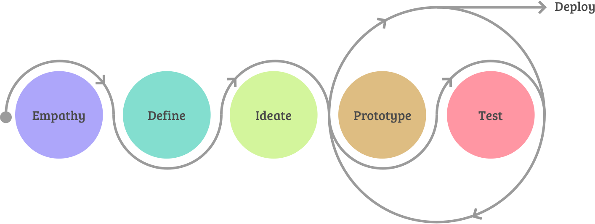

Usability Research of State Benefit Programs for Low-Income Residents
Product and Visual Design

Product and Visual Design
YourTexasBenefits is an app used by people seeking to apply for and manage a variety of public benefits in the state of Texas. I worked on this project over the course of a year as a UX designer employed with Deloitte Digital, one of the largest digital agencies in the US.
My objective while working on this project was to continually research and find ways to improve the experience of applying for, updating and managing benefits for people in need. This would allow people to do so without having to make long trips to benefit offices, wait hours to be seen, spend hours on the phone with support agents, all while keeping them up-to-date on the status of their benefits.
The state of Texas was constantly striving to make benefit management simpler and more accessible. Due to life circumstances, people need to apply to receive benefits such as Medicaid, Snap & WIC Food benefits, health care, and other support services.
In order to apply for and manage these benefits a person needs to visit a physical benefits office, and once applied for, receive and reply to requests for additional paperwork. Paperwork changes would often result in changes to their benefits and would again require back and forth communication via mail.
Pain point 1: Person needs to visit a benefits center to apply for benefits or update benefits information.
Pain point 2: Person unable to clearly know what their benefits are at any given time without a phone call or office visit.
Pain point 3: Person has to submit change documents in person or by mail, and response times to changes are not prompt.
The users of the app are residents of Texas that are dealing with unfortunate circumstances in their lives. Often the average reading level was high school. Nearly half of users were Spanish speakers, requiring us to employee copywriters who could also write in Spanish.
Most challenging was that many people had little experience with cell phone apps, if they had a cell phone at all. They also may have limited access to computers and email. This meant concepts for the app had to be simple and easy to navigate.
We often went on research trips to benefit offices to meet with desk attendants and users in person to collect anonymous data about these people, and the struggles they encountered using the app.
Many people needed to use the app to apply for benefits as well as update details about employment or living situations, which resulted in changes to benefit programs. They could also self-upload and submit files needed to process their claims.
I worked remotely with a team of three, which included a project manager, documentation and copy writer, and one other UX designer. We would routinely meet online to discuss priorities, organize our efforts using Jira, and twice a month fly to Texas to meet with stakeholders and perform user testing.
I helped drive the UX process through wireflow mockups and documentation of feature changes as well as identifying room for improvements. I also lead our on-site research trips and engaged with users directly.
Government programs require extensive testing, research and documentation in order to make any changes. Any proposed change required legal and administrative review and sign off before testing and development.
We were also constrained by who we could test and where because of confidentiality concerns and how we would handle engaging with the population. All questions and tests needed to be approved beforehand.
While our process of doing UX updates was similar to that of an agile approach, we often had to function in a waterfall development model as much of what we designed was built and shipped by a different team.
The typical process of identifying, designing and managing an update proceeded as follows.
We used this process to make sure decisions were well thought out, supported by testing and research, and approved by stakeholders.
Additionally we could expect the occasional need to go through extensive government approvals for minor changes and the need to meet heavy mobile accessibility guidelines for every feature.
After going through these processes again and again, I learned a lot about how to fully document an intricate process of application updates across teams. Unfortunately government requirements restricted us from collecting data to measure impacts, but comments often suggested we were making the right decisions.
I conducted over 150 in-person user tests, on average 12-15 per session. I visited 5 different service phone sites in Texas for content feedback, review and problem discovery.
Matt’s work helped us execute on key UX improvements to the app. He helped manage research on-site and put together key artifacts that helped with stakeholder approval, testing and development.“ Laura Pionek, Senior UX Architect - Deloitte Digital
As a result of my work and experience with benefit and insurance programs I was selected to travel to Washington State and Pennsylvania to direct stakeholder meetings and run feature discovery clinics. These clinics used tactics like card sorting and team feedback sessions to see how we could improve their benefit programs.
My favorite part of this project was seeing how changes to the mobile app impacted lives by saving people's time and travel expenses.
Thanks for reading! If you want to collaborate, talk about product design, or just want to say hello, hit me up at matth@anothercolor.com or connect via LinkedIn.
I am available for HIRE. :)